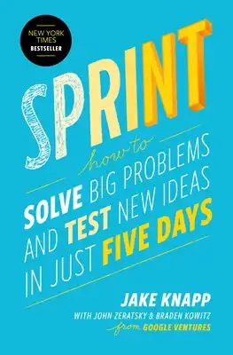

Library › Business & Startups
Sprint — Summary & Key Lessons

How to solve big problems and test new ideas in just five days — Google Ventures' battle-tested recipe.
📖 OPEN THE FULL INTERACTIVE BREAKDOWN →🌐 Read it in Hindi, Hinglish, Gujarati, Tamil & 22 more languages — free, with audio.
💡 The Big Idea
Big decisions default to two bad options: endless meetings (opinions battling opinions) or expensive launches (betting months of build to learn what a week could have told you). The Design Sprint compresses the loop: five days, one room, 5-7 people, phones away. MONDAY: map the problem, ask the experts, pick one ambitious TARGET moment on the map. TUESDAY: sketch competing solutions SOLO (group brainstorms reliably underperform individual sketching — loud ≠ best). WEDNESDAY: decide via structured critique and silent voting (the Decider breaks ties — democracy is for input, not decisions), then storyboard. THURSDAY: build a FACADE — a realistic-seeming prototype in one day (Keynote screens, a fake landing page, a brochure; 'prototype mindset': it only needs to survive Friday). FRIDAY: five 1-on-1 customer interviews — five is enough to expose the big patterns. The output isn't a product; it's the most valuable commodity in business: evidence, before expense. Failure on Friday is a triumph — you just saved the quarter you were about to spend.
🧠 The 6 Key Lessons
Lesson 1: Start at the End: Map, Target, and the Decider
Monday-Tuesday
Monday's discipline: write the long-term goal, then list the scary questions ('what could make this fail?') as testable assumptions. Map the customer's journey from discovery to done, interview the room's experts (sales, support, engineering — each holds puzzle pieces nobody else has), and note problems as HMW ('how might we...') cards. Then the crucial narrowing: pick ONE target customer and ONE target moment on the map — sprints die of breadth. Tuesday flips brainstorming: everyone sketches ALONE through structured steps (notes → ideas → crazy 8s → detailed solution sketch), because research is clear that group ideation produces fewer, worse, louder ideas. Anonymous, detailed, self-explanatory sketches ensure Wednesday judges ideas, not presenters.
📖 Example: Knapp's flagship story: Blue Bottle Coffee's sprint on selling coffee online — a room containing baristas, executives and engineers mapped the buyer journey and targeted the scariest moment: how does a coffee-obsessed brand convey expertise through a… Read the full example →
⚡ Do this: For your next big decision, run Monday standalone even without a full sprint: one page — long-term goal, top 3 fear-questions rewritten as assumptions, a simple journey map, one circled target moment. Decisions narrow beautifully when fears become testable sentences.
Lesson 2: Decide Without Debate, Prototype Without Building
Wednesday-Thursday
Wednesday runs on structured looking, not discussion: solutions taped to the wall (the 'art museum'), silent review with dot stickers marking interesting fragments (heat-mapping), 3-minute speed critiques per sketch, then silent votes — and the DECIDER (the person who owns the outcome — CEO, product owner) makes the final call, explicitly empowered to overrule the crowd. This kills the two classic meeting failures: charisma winning over content, and compromise blending strong ideas into safe mush ('a car that's also a boat'). Winning scenes get storyboarded into a ~15-frame script. Thursday builds the FACADE: split roles (makers, stitcher, writer, asset collector, interviewer-prep), use fakery aggressively (slides that look like apps, a landing page for a service that doesn't exist, a 3D-printed shell) — one day forces the prototype mindset: just real enough to trigger honest reactions tomorrow.
📖 Example: Slack's sprint (from GV's portfolio work): testing how to explain a then-confusing product to non-tech teams — two competing approaches prototyped as parallel fake websites in a single Thursday. Friday's interviews shattered the team's internal favorite (a… Read the full example →
⚡ Do this: Adopt two sprint rituals permanently: (1) silent dot-voting before any design/plan discussion — look first, talk second; (2) name the Decider out loud at every meeting's start. And next time you 'need to build something to test it,' ask: what's the Keynote/landing-page facade version buildable by Friday?
Lesson 3: Five Interviews, Five Patterns, Zero Guessing
Friday
Friday: one interviewer, five customers (recruited midweek to match the target — Craigslist + screener questions works), everyone else watching the live stream in another room, note-taking on a shared grid (interviewee × prototype section). The five-act interview: friendly welcome → context questions (their life, not your product) → introduce the prototype ('some things may not work — you can't do anything wrong; think aloud') → tasks with open prompts ('what would you do here? what's this for?') → debrief. Why five is enough: usability research (Nielsen) shows ~85% of major patterns surface by the fifth user — and patterns are the point: if 4 of 5 stumble at the same screen, you have your answer with a confidence no analytics dashboard offers, because you watched the stumble happen and heard the reasoning. End-of-day: the team reads the grid together and answers the sprint questions — evidence has replaced the loudest voice.
📖 Example: The pattern Knapp reports across 150+ GV sprints: teams enter Friday certain, and reality bats about .500 — winners include 'efficient failures' like the medical-device startup whose entire onboarding assumption died by interview three (pivot cost: one week,… Read the full example →
⚡ Do this: Never ship a significant change without the Friday ritual: five 45-minute interviews with target users on a facade or staging build, a watch-party grid for the team, and one rule — count patterns (3+ of 5), ignore anecdotes (1 of 5). Half a day of watching beats a quarter of wondering.
Lesson 4: Note-and-Vote: The Everyday Micro-Sprint for Any Decision
Appendix: Sprint Tactics for Daily Work
The full five-day sprint is the flagship, but Knapp's most-used export is the ten-minute NOTE-AND-VOTE — the sprint's decision engine, detached for daily life: (1) everyone writes ideas/options SILENTLY for 3-5 minutes (no discussion — talking first anchors the room to the loudest voice), (2) each person picks their own top 1-2 (still silent), (3) options go on the wall/doc, (4) everyone dot-votes silently, (5) the DECIDER makes the final call, informed but not bound by votes. Ten minutes, and it dismantles the three meeting diseases: groupthink (silence protects independent judgment), HiPPO-domination (the highest-paid person's opinion arrives at the same volume as everyone's), and the compromise mush that committee discussions secrete. The other everyday exports: the TIME TIMER (visible countdowns convert vague discussions into focused bursts), NO-DEVICE rules during creation blocks, 'together alone' (co-located solo work — the sprint's secret rhythm), and starting any project by writing the PRESS RELEASE of its finished state (the end-first habit from Monday's map). The sprint isn't really a week — it's a philosophy: structure beats discussion, artifacts beat opinions, and deciders beat consensus.
📖 Example: Knapp's origin story for the technique: Google meetings where brainstorms produced whiteboards of shouted ideas that quietly died — until he tested silent-writing sessions and found both quality and DIVERSITY of ideas jumped (introverts, juniors, and… Read the full example →
⚡ Do this: Install note-and-vote as your default for any group choice this week (feature, name, restaurant, hire shortlist): 4 minutes silent writing, 2 minutes silent dot-voting, decider calls it. Buy or open a visible timer for every work block. And start your next project by writing its one-paragraph press release — dated, past tense, celebrating what shipped.
Lesson 5: The One-Week Deadline: Why Time Limits Produce Better Decisions
Part 3: The Method
Knapp's most counterintuitive finding: a five-day deadline produces BETTER decisions than unlimited time — because scarcity forces prioritization, kills perfectionism, and makes the team actually decide. Without a deadline, teams research forever, debate endlessly and ship nothing; with one, every conversation ends in a choice. The sprint structure (map, sketch, decide, prototype, test) is designed so that by Friday you have a realistic prototype tested with real customers — something most teams take months to reach. The lesson for any project: if you can't do it in a week, you haven't simplified it enough. Time limits aren't the enemy of quality; they're the parent of decisions.
📖 Example: Knapp describes how Google Ventures teams, used to endless roadmaps, were transformed by the sprint week — in five days they built and tested prototypes that resolved questions their companies had argued about for months. The deadline didn't reduce quality;… Read the full example →
⚡ Do this: Take your current stalled project and impose a one-week deadline: define the single question to answer, build the smallest possible prototype, and test it with real users by Friday.
Lesson 6: Test With Five Customers, Not Fifty: The Small Sample Truth
Part 4: The Validation
Knapp's research-backed shortcut: you don't need a statistically significant sample to learn what matters — five well-chosen customers reveal the critical patterns, because the big problems (confusion, missing features, broken flows) show up in nearly every session. The key is the quality of the interviews: watch them use the prototype, don't tell them how it works, and ask what they expected before showing anything. The five-interview rule works because usability problems aren't rare events — they're systemic, and one confused user is usually five confused users. The lesson: stop delaying testing until you have the perfect sample; test early with five real people, fix what repeats, and test again. The data you need is closer than you think.
📖 Example: Knapp recounts sprint after sprint where the same pattern emerged: five interviews revealed the same three problems, and fixing those three transformed the product's reception. The team that waited for 'enough data' never got it; the team that tested five… Read the full example →
⚡ Do this: This month, run one five-person test of your product, pitch or page: watch five real people use it, note every moment of confusion, and fix the top three patterns that repeat.
✅ 5-Step Action Plan
- Turn fears into testable assumption-questions before any big bet.
- Sketch competing solutions solo; judge them silently before discussing.
- Name a Decider everywhere — input is democratic, decisions aren't.
- Prototype facades in a day: real enough to fool, cheap enough to burn.
- Watch five target customers before betting a quarter — patterns over opinions.
⚠️ When This Doesn't Work
Knapp's 5-day sprint is the best prototyping method ever built — and MoviePass is its warning: the company sprinted brilliantly — rapid iterations, aggressive experiments, a product people loved — and each sprint validated a model that lost money on every single subscriber. A sprint tells you whether people want it; it cannot tell you whether the economics work. Prototype the product fast, but prototype the unit economics even faster — MoviePass validated desire and ignored price, and desire without margin is just a faster way to lose more.
💀 The Graveyard Proves It
🎬 MoviePass — All-You-Can-Watch for $9.95 — Math Sold Separately. Burn: $150M+; stock -99.9%. Read the full case study →
💬 Best Quotes from Sprint
- “You don't have to launch to learn.”
- “The prototype is a facade — and that's the point.”
- “Five customers on Friday beat five months of meetings.”
Interactive version: mark lessons as read, listen in your language, share quote cards.